REPRODUCIBLE RESEARCH MODULES · v0.1
Ring-First cameras.
Native HERO surfaces.
Real G01 inputs, fixed R10 CAD and conditional metric cameras. One newly executed official HERO inference, followed by original native-grid triangulation. No Body model, fusion, hole filling or learned camera correction.
From observed pixels to an open surface
All images below are generated from actual project inputs and actual network outputs. Surface continuity, smoothness and apparent closure do not establish geometric truth.
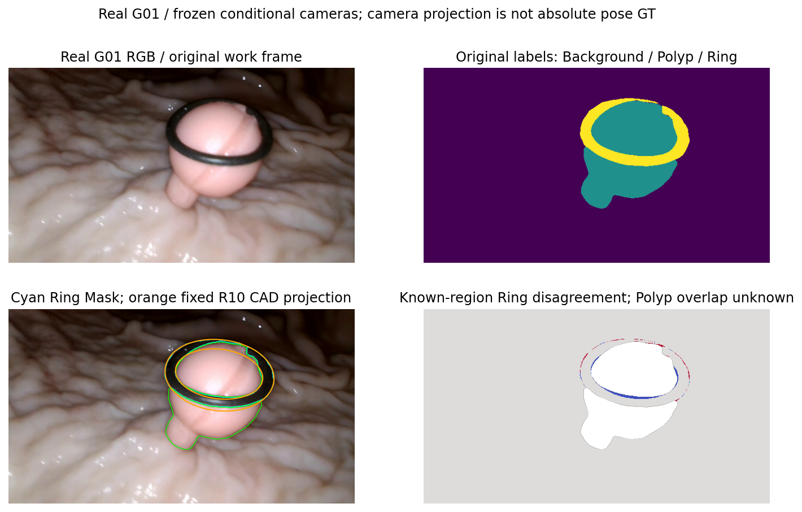

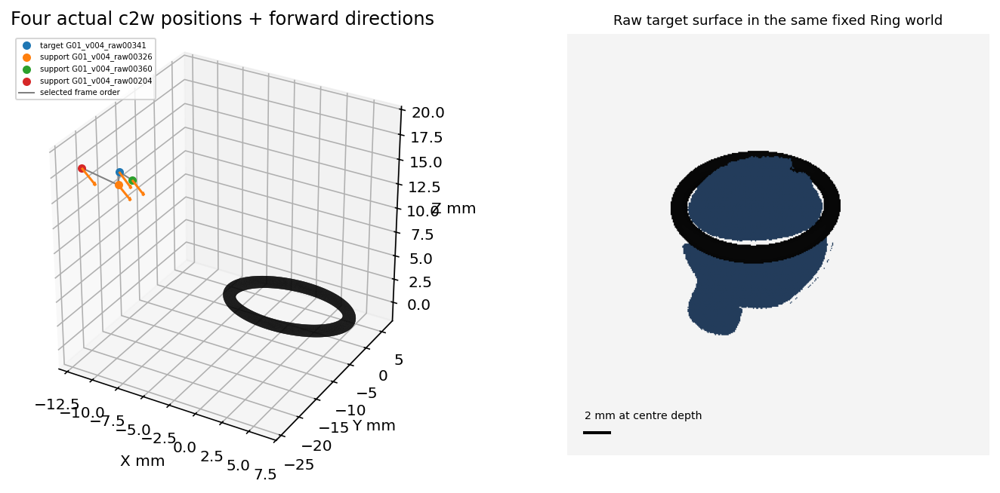

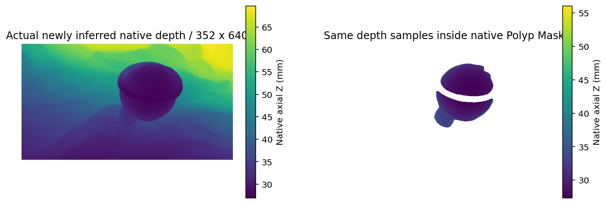
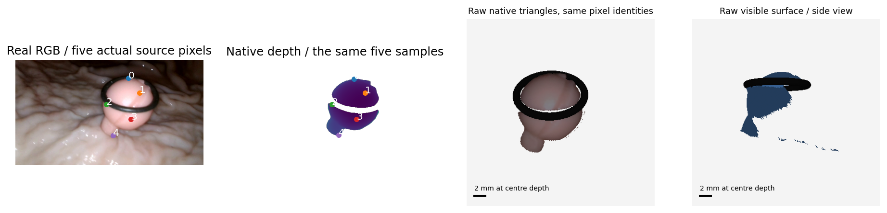

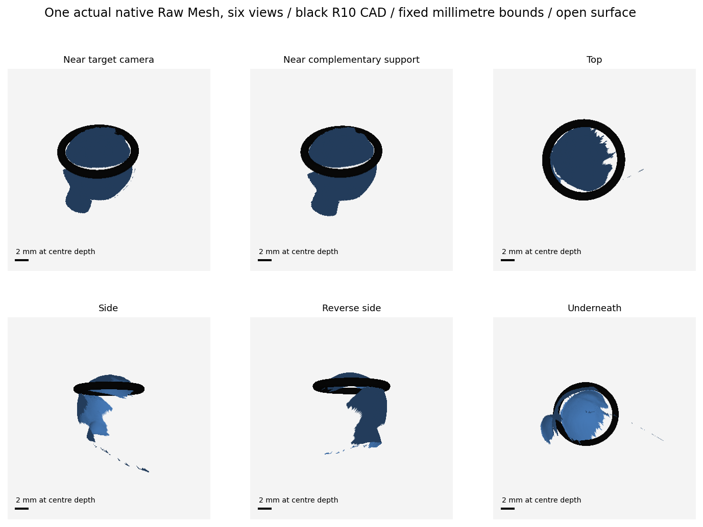

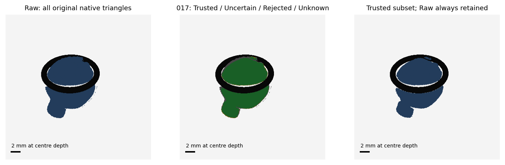
Inspect the actual geometry
Drag to orbit; scroll to zoom. Sources remain separate objects. G03 is a frozen same-video reference example, not a new reconstruction or a fused surface. GLB positions follow the glTF metre convention; the viewer reports dimensions in millimetres.
Loading Three.js 0.169.0…
Separate source objects are not statistically independent evidence: their upstream RGB support images can overlap. The source manifest preserves those identities.
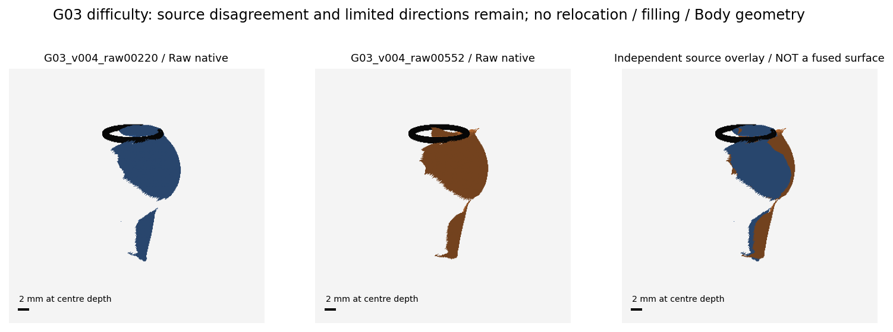
Unchanged historical originals
These five original figures were read from scientific snapshot 5636aaeb…, visually inspected, and copied without editing. They document previous multi-source context and limitations; no historical overlap is relabelled as a newly fused or accurate surface. Source identities and SHA256.

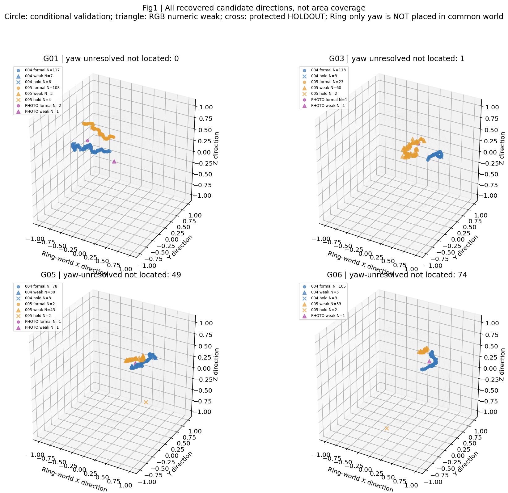

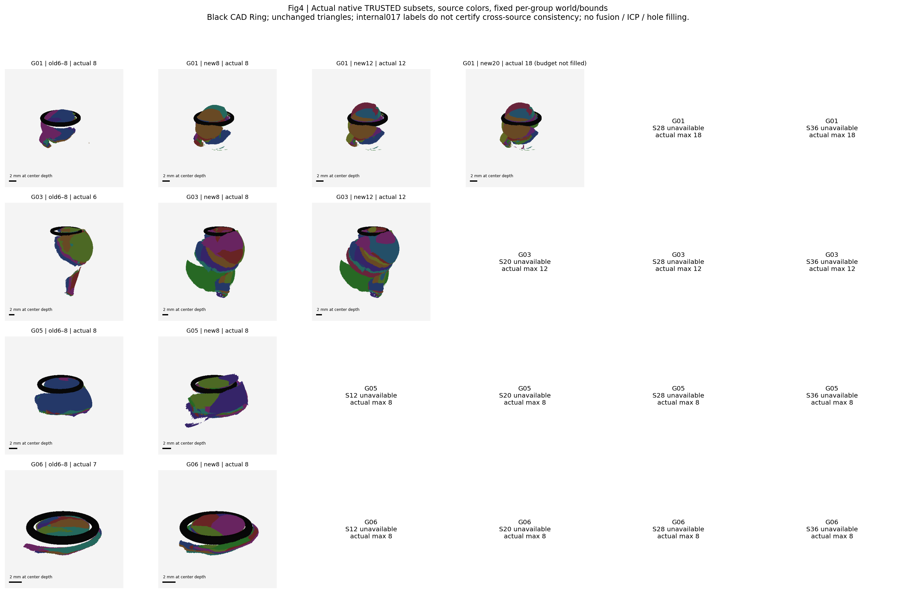

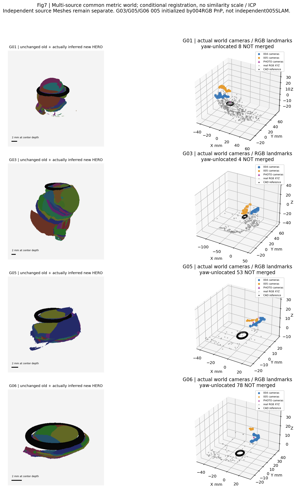

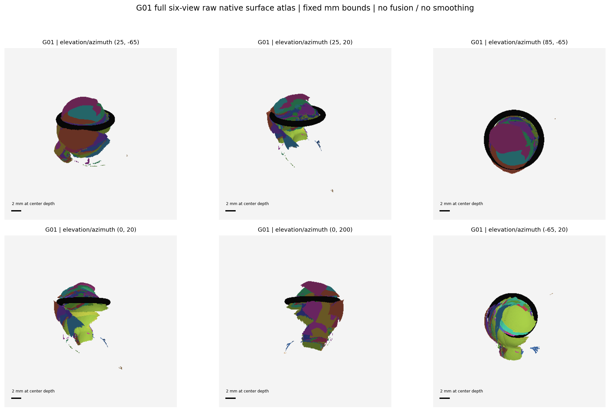

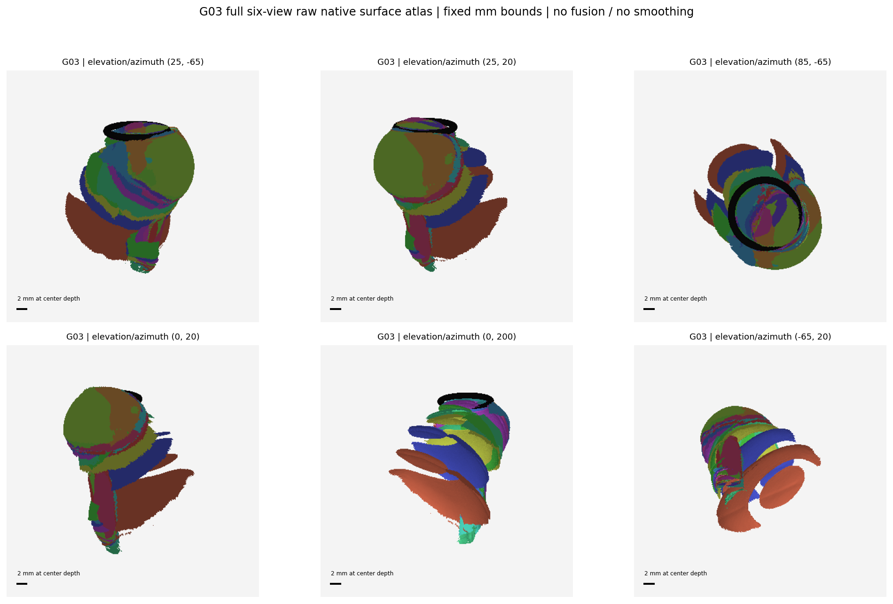